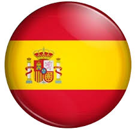

AVE !
Bienvenue sur ma première page internet GitHub
Intro
J'ai 30 ans. Je suis suisse mais mes origines sont également allemandes et italiennes. Je suis de langue maternelle française et allemande.
Cela m'a sans aucun doute sensibilisé aux échanges interculturels. Ayant vécu ma jeunesse durant une période où il était encore possible de voyager
(cela semble si loin...),
j'ai décidé d'apprendre l'anglais et l'espagnol, en effectuant divers séjours linguistiques:
2005: 6 mois à Toro, Zamora en Espagne
2006: 3 mois à Chichester en Angleterre
2012: 3 mois à Valencia en Espagne
2018: 5 mois à Medellin en Colombie
Parcours
Depuis 2009, je suis actif dans le secteur bancaire, en particulier dans la gestion de fortune pour la clientèle domiciliée en Amérique du Sud.
Cela m'a permis de pratiquer l'espagnol quotidiennement et de développer mes connaissances en langage financier/bancaire.
En 2016, j'ai pris la décision de me réorienter vers une activité liée à la communication multilingue. J'ai donc effectué un Bachelor en communication multilingue
à l'Université de Genève, au sein de la Faculté de Traduction et d'Interprétation. En paralèlle, je me suis de plus en plus intéressé aux nouvelles technologies,
ce qui m'amène aujourd'hui à effectuer ce Master en Traitement Informatique Multilingue.
Depuis 2018, je m'intéresse beaucoup à la Blockchain. À terme, je souhaite allier mes compétences langagières, financières et technologiques pour travailler dans le domaine
de la Blockchain et des cryptomonnaies.
Voici une photo anonymisée de moi en train d' "étudier" dans les couloirs de l'UNIGE.

Contact
vmvdeus@etu.unige.ch
